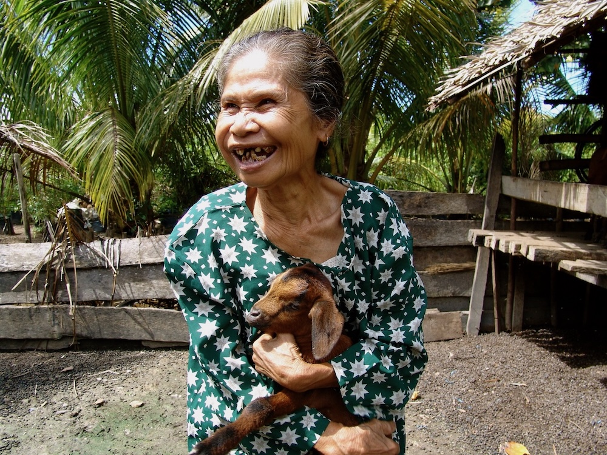
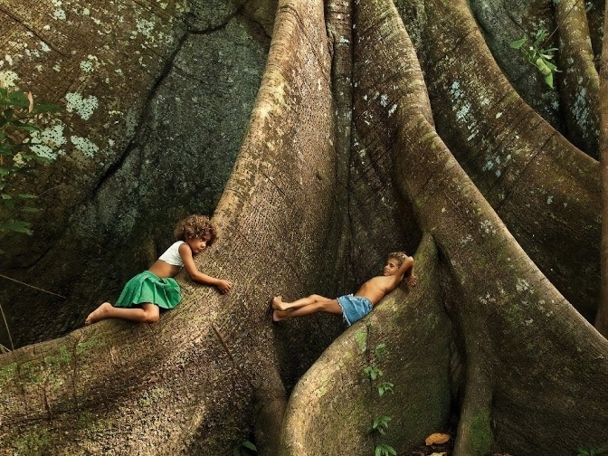

“A must-read for changemakers committed to equity and environmental justice!” — Julia Riseman
“With deep insight, specific guidance and stories from actual practice, this book helps us pay attention to how we pay attention.” — Steve Garnaas-Holmes
Discover the transformative power of Radical Listening™—a practice that unveils collective wisdom by fostering a deep sense of interconnectedness and community.
Based on Dr. Kinari Webb’s pathbreaking work with Health In Harmony, an organization dedicated to environmental conservation and community health, this book explores a way of listening that honors a community's inherent wisdom and expertise, and supports entire ecosystems in thriving.
Through accessible practices and vivid, real-world stories of Indigenous and local communities leading the way in climate solutions, you’ll learn how listening transforms lives, communities, and the world itself.
Authors
Patricia Plude, D.Min. is a teacher, musician, community organizer, and pastor. She holds a Doctor of Ministry in creation spirituality (the perspective that divinity permeates all things) from the Fox Institute for Creation Spirituality, and she brings her life-long experience teaching students of all ages to her work as an educational consultant for Radical Listening with Health In Harmony. Pat lives in San Francisco where she has served for over two decades as the Minister of Music, Arts & Formation for First Mennonite Church of San Francisco, a vibrant, progressive congregation working in the intersection of spirituality and social and environmental justice.
Kinari Webb, M.D. is the founder of Health In Harmony, an international nonprofit that fosters a bold, climate justice approach to protecting Earth’s tropical rainforests for human health and planetary health. She is also a cofounder of Alam Sehat Lestari (ASRI) and she has been honored as an Ashoka Social Entrepreneur and Rainier Arnhold Fellow. Dr. Webb is a two-time TEDx presenter, and in 2021, Flatiron Books published her award-winning memoir, Guardians of the Trees: A Journey of Hope Through Healing the Planet. Kinari lives in the San Francisco Bay Area with her partner and two young sons.
Stories
Health In Harmony's Radical Listening Question:
You are guardians of this precious rainforest that is valuable to the whole world. What would you need as a thank you from the world community so that you could protect it and thrive yourselves?
Indonesia
“We are the Pathfinders for where the world needs to go, and now we want to teach the world!”
Read the story
Madagascar
“Because you listened to us, we are no longer afraid of the hunger season.” Read the story
Brazil
“I can’t believe we didn’t think of that!” Read the story
In 2019, Health In Harmony began doing Radical Listening with communities living around the Manombo Forest on Madagascar’s southeastern coast. In addition to health care access, one of the primary issues the communities faced was food scarcity. Through Radical Listening the community identified that the creation of a modest system of water retention and irrigation would allow them to flood fields in the valley and not have to slash and burn more forest to grow rice.
Over the next several years Health In Harmony partnered with the communities to build this retention structure, dig a canal, and construct an aqueduct to flood new fields in the valley. They brought in the varieties of rice the community had also requested, and offered training in how to grow it. They helped the communities renovate their schools, and they improved health care access, other intersectional solutions the villagers knew would help them thrive and stop logging the forest.
After all this was accomplished, one woman poignantly summarized the success of the multifaceted project: “Because you listened to us, we are no longer afraid of the hunger season.”
Photo: Mahefantsoa Nantenaina Claret
Indonesia

In 2005 Dr. Kinari Webb spent over 400 hours listening to the communities living around Gunung Palung National Park in Indonesian Borneo. Even though this park comprised government protected rainforest, the communities were forced to log it to meet their basic needs. In hour after hour of Radical Listening, Kinari heard the same two things: We need access to good and affordable health care. And we need to learn organic farming. We’ve heard there is a way to farm without slashing and burning, and without expensive fertilizers that we cannot afford. We must learn this.
To meet these needs, Dr. Webb and her team formed an Indonesian sister nonprofit called Alam Sehat Lestari (ASRI)*, and together with Health In Harmony, they helped the villagers implement their solutions. First, they built a medical clinic in the small town of Sukadana. This clinic operated on an innovative green credit system: everyone could barter goods for service, and communities that were reducing illegal logging received deep discounts. ASRI also created an organic garden at the clinic and offered the foundational training the communities had requested.
Following these two cornerstone solutions the communities partnered with ASRI to design and implement other programs: a system of Forest Guardians led by the community members themselves; a Goats for Widows program; a Kitchen Gardens initiative; a Chainsaw Buyback program; and finally ASRI Kids, an innovative program that educates elementary school children about the importance of protecting the rainforest, and offers education on a variety of topics from nutritious eating and hand washing to wildlife, ecosystems and sustainable living.
Several years after all these programs were established, one of the village chiefs near Sukadana gave a speech. In it he said boldly, “We are the Pathfinders for where the world needs to go, and now we want to teach the world!”
* Alam Sehat Lestari translates to “healthy nature everlasting.” ASRI means “harmoniously balance,” for short.
Photo: Katherine Homes
Brazil

In 2020, Health in Harmony conducted Radical Listening sessions with members of several communities living in the Brazilian rainforest. These communities make a living from products, including wild rubber, that they collect from the rainforest in reserves that they collectively own. But Health In Harmony was told that sometimes when the people’s needs, especially health care, weren’t being met, they sometimes had to make unfortunate deals with outsiders. Deals that hurt the forest, and, in turn, their livelihood.
These Radical Listening sessions took place during the Pandemic. Therefore they were creatively conducted through shortwave radio, with the help of a man from a Brazilian organization that had worked with these communities for at least fifteen years.
Despite the craziness of the remote listening setup, the conversation was earnest and productive. The communities asked for help clearing several airstrips—so that they would be able to evacuate people who were sick. They asked for mobile clinics four times a year for basic health care, including vaccines. And they asked for help advocating the government for a local high school, so their children would not have to leave the forest for education beyond grade school. The communities knew that a combination of all of these things would help them protect their forest for generations to come.
As we listened, our Brazilian colleague expressed astonishment and delight at the ingenuity of all the intersectional solutions the people were articulating. Over and over again he exclaimed, “Whoa! I can’t believe we didn’t think of that!”

 Patricia Plude, D.Min. is a teacher, musician, community organizer, and pastor. She holds a Doctor of Ministry in creation spirituality (the perspective that divinity permeates all things) from the Fox Institute for Creation Spirituality, and she brings her life-long experience teaching students of all ages to her work as an educational consultant for Radical Listening with Health In Harmony. Pat lives in San Francisco where she has served for over two decades as the Minister of Music, Arts & Formation for First Mennonite Church of San Francisco, a vibrant, progressive congregation working in the intersection of spirituality and social and environmental justice.
Patricia Plude, D.Min. is a teacher, musician, community organizer, and pastor. She holds a Doctor of Ministry in creation spirituality (the perspective that divinity permeates all things) from the Fox Institute for Creation Spirituality, and she brings her life-long experience teaching students of all ages to her work as an educational consultant for Radical Listening with Health In Harmony. Pat lives in San Francisco where she has served for over two decades as the Minister of Music, Arts & Formation for First Mennonite Church of San Francisco, a vibrant, progressive congregation working in the intersection of spirituality and social and environmental justice.  Kinari Webb, M.D. is the founder of Health In Harmony, an international nonprofit that fosters a bold, climate justice approach to protecting Earth’s tropical rainforests for human health and planetary health. She is also a cofounder of Alam Sehat Lestari (ASRI) and she has been honored as an Ashoka Social Entrepreneur and Rainier Arnhold Fellow. Dr. Webb is a two-time TEDx presenter, and in 2021, Flatiron Books published her award-winning memoir,
Kinari Webb, M.D. is the founder of Health In Harmony, an international nonprofit that fosters a bold, climate justice approach to protecting Earth’s tropical rainforests for human health and planetary health. She is also a cofounder of Alam Sehat Lestari (ASRI) and she has been honored as an Ashoka Social Entrepreneur and Rainier Arnhold Fellow. Dr. Webb is a two-time TEDx presenter, and in 2021, Flatiron Books published her award-winning memoir,